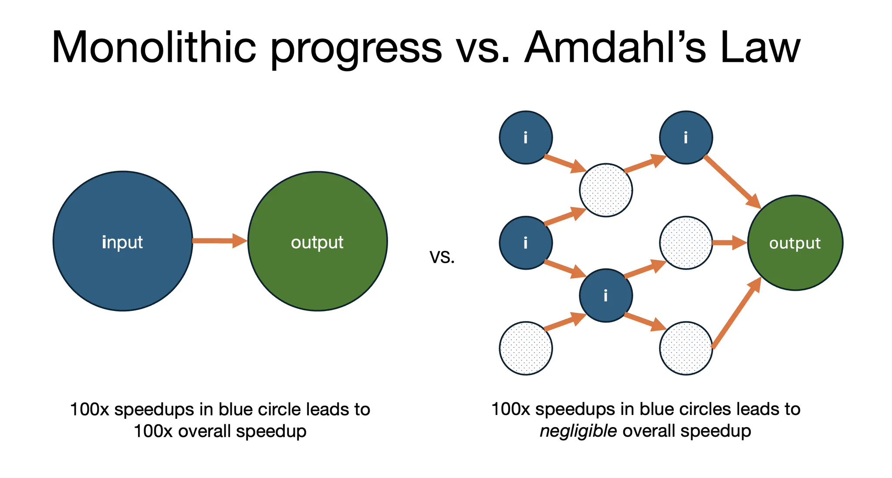
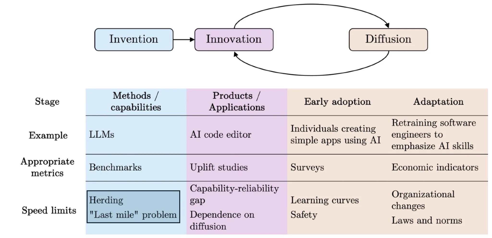
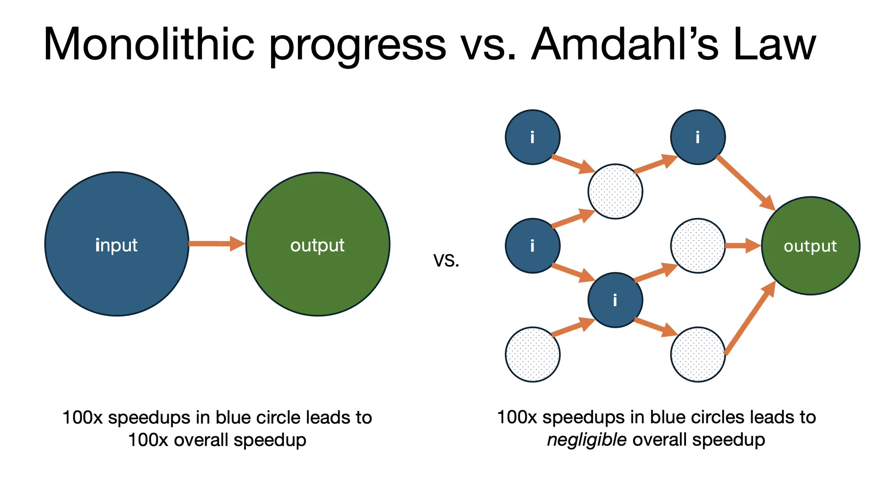
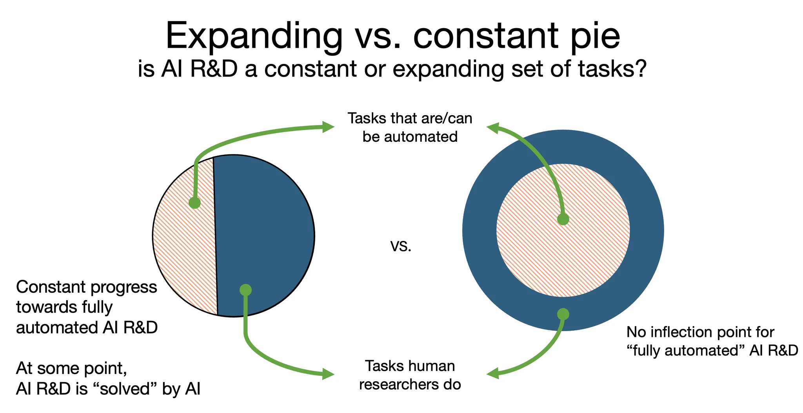
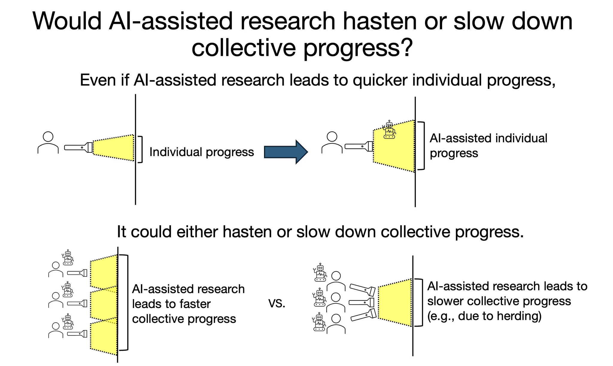
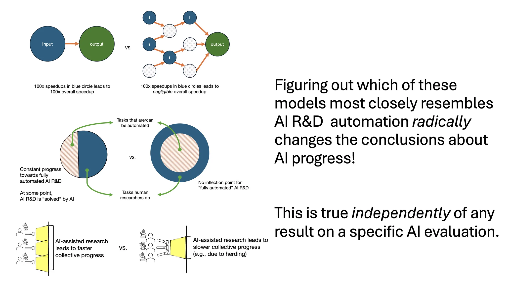

Models of AI Progress
Sayash Kapoor and Arvind Narayanan on three causal models of AI progress — bottlenecks, expanding task sets, and homogeneity — in their own words
About this document.
This is a quote dossier, not a conventional essay. Every content item below is a verbatim quotation from a primary source by Sayash Kapoor and/or Arvind Narayanan, with a link to the source; quotations are drawn from the full texts of the sources, and italics follow the sources’ emphasis. The only editorial matter is the title, table of contents, section headings, figure captions, and the footnotes in Section 7, which point to related arguments by other writers. The throughline is Kapoor’s tweet thread of September 5, 2025 (@sayashk), cross-posted the same day as a LinkedIn post titled “Models of AI progress.” Compiled October 31, 2026 (v2).
1The thread: “two completely different causal models of the world”
-
“AI as Normal Technology is often contrasted with AI 2027. Many readers have asked if AI evaluations could help settle the debate. Unfortunately, this is not straightforward. The debate is not about differences in AI capability, which evaluations typically measure. It is about two completely different causal models of the world. Most AI evaluations don’t even attempt to measure differences in causal models!”
— Sayash Kapoor, tweet thread, tweet 1, September 5, 2025 (full wording per the same-day LinkedIn post) -
“A key turning point in scenarios like AI 2027 is automated AI R&D — AI systems used to autonomously improve AI, greatly speeding up the pace of AI progress and potentially leading to superintelligence. In AI as Normal Technology, we did not go too deep into this disagreement, since our broader point was that AI impacts are bottlenecked by diffusion, and the rate of AI progress doesn’t change that. But in the time since we wrote the essay, we have thought about this disagreement more deeply, motivated by Helen Toner’s workshop on the topic at CSET.”
— Sayash Kapoor, “Models of AI progress,” LinkedIn, September 5, 2025 -
“The key point of this thread is that whether self-improvement occurs depends a lot on our causal model of AI progress. Let’s look at three different types of world models that lead to drastically different interpretations of progress, even with exactly the same AI results on benchmarks!”
— Sayash Kapoor, tweet thread, tweet 3, September 5, 2025


2Causal model 1 — Is AI progress a monolith or a graph with bottlenecks?
-
“1. Is AI progress a monolith (100x speedups in inputs leads to 100x speedups in outputs) or does it look like a dense graph with many bottlenecks?”
— Sayash Kapoor, tweet thread, tweet 4, September 5, 2025 -
“If we’re in a world with monolithic progress, we should expect dramatic returns to AI progress from improving AI capabilities. If we’re in the world with bottlenecks, even a 100x speedup in tasks amenable to AI leads to only a negligible speedup in the overall progress. Amdahl’s law kicks in, and the overall performance of the system would be limited by its slowest component.”
— Sayash Kapoor, tweet thread, tweet 4, September 5, 2025 (full wording per the same-day LinkedIn post) 1 -
“Our argument for the slowness of AI impact is based on the innovation-diffusion feedback loop, and is applicable even if progress in AI methods can be arbitrarily sped up.”
— Arvind Narayanan and Sayash Kapoor, “AI as Normal Technology,” April 15, 2025, Part I -
“The first is that even if arbitrary speedups in AI methods are possible, we think that innovation and diffusion will happen at human speed.”
— Sayash Kapoor and Arvind Narayanan, “AGI is not a milestone,” May 1, 2025 -
“The ‘bitter lesson’ in AI is that general methods that leverage increases in computational power eventually surpass methods that utilize human domain knowledge by a large margin. This is a valuable observation about methods, but it is often misinterpreted to encompass application development. In the context of AI-based product development, the bitter lesson has never been even close to true.”
— Narayanan and Kapoor, “AI as Normal Technology,” April 15, 2025, Part I

2.1 The concrete bottlenecks they name
-
“Bottlenecks to progress could include compute limits, data from real-world experiments, and even bottlenecks we haven’t recognized yet.”
— Sayash Kapoor, tweet thread, tweet 4, September 5, 2025 -
“Second, the fact that AI would help conduct AI research does not imply that this process can be arbitrarily accelerated. AI is already used to automate a significant portion of AI research today. But there are many bottlenecks to progress in AI methods, such as the social nature of data collection and real-world interaction that might be required for achieving certain capabilities, computational and cost limits, or herding around popular or intuitive ideas while ignoring the ones that enable true breakthroughs.”
— Kapoor and Narayanan, “AGI is not a milestone,” May 1, 2025 -
“It is true that technical advances in AI have been rapid, but the picture is much less clear when we differentiate AI methods from applications.”
— Narayanan and Kapoor, “AI as Normal Technology,” April 15, 2025, Part I -
“In other words, in this broad set of domains, AI diffusion lags decades behind innovation.”
— Narayanan and Kapoor, “AI as Normal Technology,” April 15, 2025, Part I (on predictive-optimization applications) -
“But this process took over two decades instead of a few hours in the case of AlphaZero because safety considerations put a limit on the extent to which each iteration of this loop could be scaled up compared to the previous one.”
— Narayanan and Kapoor, “AI as Normal Technology,” April 15, 2025, Part I (on self-driving cars) -
“In general, much knowledge is tacit in organizations and is not written down, much less in a form that can be learned passively. This means that these developmental feedback loops will have to happen in each sector and, for more complex tasks, may even need to occur separately in different organizations, limiting opportunities for rapid, parallel learning.”
— Narayanan and Kapoor, “AI as Normal Technology,” April 15, 2025, Part I -
“Organizations and individuals might be averse to sharing sensitive data with AI companies, and regulations might limit what kinds of data can be shared with third parties in contexts such as healthcare.”
— Narayanan and Kapoor, “AI as Normal Technology,” April 15, 2025, Part I -
“It will likely require interactions with, or even experiments on, people or organizations, ranging from drug testing to economic policy. Here, there are hard limits to the speed of knowledge acquisition because of the social costs of experimentation. Societies probably will not (and should not) allow the rapid scaling of experiments for AI development.”
— Narayanan and Kapoor, “AI as Normal Technology,” April 15, 2025, Part I -
“Many other speed limits are possible. Historically, deep neural network technology was partly held back due to the inadequacy of hardware, particularly Graphics Processing Units. Computational and cost limits continue to be relevant to new paradigms, including inference-time scaling. New slowdowns may emerge: Recent signs point to a shift away from the culture of open knowledge sharing in the industry.”
— Narayanan and Kapoor, “AI as Normal Technology,” April 15, 2025, Part I -
“Historically, the three axes of scaling — dataset size, model size, and training compute — have progressed in tandem, and this is known to be optimal. But what will happen if one of the axes (high-quality data) becomes a bottleneck?”
— Arvind Narayanan and Sayash Kapoor, “AI scaling myths,” June 27, 2024 -
“If LLMs can’t do much beyond what’s seen in training, at some point, having more data no longer helps because all the tasks that are ever going to be represented in it are already represented.”
— Narayanan and Kapoor, “AI scaling myths,” June 27, 2024 -
“The problem is that accelerating growth requires eliminating bottlenecks to progress. That’s harder than most AI boosters assume. AI will likely have uneven effects across sectors, and long-term growth will be bottlenecked by the weakest sector.”
— Kapoor and Narayanan, “AGI is not a milestone,” May 1, 2025 1 -
“There are many bottlenecks to the diffusion of AI: developing useful products and applications, training the workforce to utilize these products, implementing organizational changes to enable AI use, and establishing laws and norms that facilitate AI adoption by companies.”
— Kapoor and Narayanan, “AGI is not a milestone,” May 1, 2025 -
“Those arguing for dramatic effects often have an incorrect mental model of what the bottlenecks actually are. For example, while it is tempting to believe that cheap scientific innovation will unlock progress, the production of new findings is actually not the bottleneck in science.”
— Kapoor and Narayanan, “AGI is not a milestone,” May 1, 2025 -
“More broadly, progress depends not just on the technology but on having the right preconditions — complementary innovations as well as cultural, economic, and political factors. If all it took to create the industrial revolution was the invention of steam power, the Roman Empire would have done it.”
— Kapoor and Narayanan, “AGI is not a milestone,” May 1, 2025 -
“Our current laws, norms, institutions, and politics evolved in a time of much less technological potential. They are already choking opportunities for straightforward types of growth, such as building more public infrastructure. To reap the economic benefits that broad cognitive automation can potentially bring, the degree of structural change that needs to happen is unfathomably greater.”
— Kapoor and Narayanan, “AGI is not a milestone,” May 1, 2025 -
“Thus, the speed of diffusion is inherently limited by the speed at which not only individuals, but also organizations and institutions, can adapt to technology.”
— Narayanan and Kapoor, “AI as Normal Technology,” April 15, 2025, Part I -
“Electric dynamos were ‘everywhere but in the productivity statistics’ for nearly 40 years after Edison’s first central generating station.”
— Narayanan and Kapoor, “AI as Normal Technology,” April 15, 2025, Part I (on the electrification of factories)
2.2 Recursive self-improvement under this model
-
“It remains to be seen if AI-conducted AI research can offer a reprieve. Perhaps recursive self-improvement in methods is possible, resulting in unbounded speedups in methods. But note that AI development already relies heavily on AI. It is more likely that we will continue to see a gradual increase in the role of automation in AI development than a singular, discontinuous moment when recursive self-improvement is achieved.”
— Narayanan and Kapoor, “AI as Normal Technology,” April 15, 2025, Part I 2 -
“But before strong superintelligence, when some part of the AI research process is automated, the overall process will be bottlenecked by something else. As a result, total research progress will accelerate, but not dramatically so.”
— Sayash Kapoor, Arvind Narayanan, Daniel Kokotajlo, Eli Lifland, and Thomas Larsen, “Common Ground between AI 2027 & AI as Normal Technology,” Asterisk, November 12, 2025 -
“recursive self-improvement could result in an ‘intelligence explosion’ in which AI systems rapidly improve their own capabilities. Or it could be bottlenecked by other factors such as the lack of real-world data (at least, that’s what the authors of AI as Normal Technology expect).”
— footnote 8, “Common Ground between AI 2027 & AI as Normal Technology,” Asterisk, November 12, 2025 2 -
“We could be wrong about this, and recursive self-improvement could be possible, leading to unbounded speedups in progress in AI methods. And this might have some interesting implications, including some discontinuities in impact, even if widespread diffusion will be slower. For these reasons, it is important to have early warning systems for recursive self-improvement.”
— Kapoor and Narayanan, “AGI is not a milestone,” May 1, 2025 -
“The agents completed all of the engineering without human help, yet could not make substantial progress towards answering the research questions.”
— Peter Kirgis, Sayash Kapoor, et al., “Can AI agents conduct open-ended AI research? Early evidence from two case studies,” arXiv:2607.27191, 2026, abstract -
“The agents completed large literature reviews, debugged GPU environments, ran hundreds of experiments and robustness checks, retrieved external reviews via the web and email, and compiled full camera-ready LaTeX documents.”
— Kirgis, Kapoor, et al., arXiv:2607.27191, 2026, §4.5 -
“This suggests that unlike engineering tasks and verifiable research tasks, agents struggle with some kinds of open-ended AI research tasks.”
— Kirgis, Kapoor, et al., arXiv:2607.27191, 2026, §7.1 -
“Our results provide early evidence that today’s agents can do the engineering of AI research, but struggle with critical parts of the research lifecycle.”
— Kirgis, Kapoor, et al., arXiv:2607.27191, 2026, abstract
3Causal model 2 — A fixed set of AI R&D tasks, or an expanding set?
-
“2) Does the world have a fixed set of tasks that constitute AI R&D? Or does it consist of an expanding set of tasks? For example, it would be inconceivable to think of many of today’s AI research directions a decade ago, when transformers were not invented.”
— Sayash Kapoor, “Models of AI progress,” LinkedIn, September 5, 2025 -
“If we’re in the former world, we might expect drastic speedups once we ‘fully automate’ AI R&D. If we’re in the latter, we might expect human researchers to have more of a role to play with increasing progress.”
— Sayash Kapoor, “Models of AI progress,” LinkedIn, September 5, 2025

-
“We conceptualize progress in AI methods as a ladder of generality. Each step on this ladder rests on the ones below it and reflects a move toward more general computing capabilities. That is, it reduces the programmer effort needed to get the computer to perform a new task and increases the set of tasks that can be performed with a given amount of programmer (or user) effort.”
— Narayanan and Kapoor, “AI as Normal Technology,” April 15, 2025, Part I -
“It is tempting to conclude that the effort required to develop specific applications will keep decreasing as we build more rungs of the ladder until we reach artificial general intelligence, often conceptualized as an AI system that can do everything out of the box, obviating the need to develop applications altogether.”
— Narayanan and Kapoor, “AI as Normal Technology,” April 15, 2025, Part I -
“This means that the goalpost of AGI will continually move further away as increasing automation redefines which tasks are economically valuable.”
— Narayanan and Kapoor, “AI as Normal Technology,” April 15, 2025, Part I 3 -
“As automation increases, humans will adapt, and will focus on tasks that are not yet automated, perhaps tasks that do not exist today (in Part II we describe what those might look like).”
— Narayanan and Kapoor, “AI as Normal Technology,” April 15, 2025, Part I -
“But humans are a moving target. As the process of diffusion unfolds and the cost of production (and hence the value) of tasks that have been automated decreases, humans will adapt and move to tasks that have not yet been automated.”
— Kapoor and Narayanan, “AGI is not a milestone,” May 1, 2025 3 -
“While it’s true that lower-hanging fruits get picked first, there are countervailing factors. Over time, our scientific tools improve and we stand on the tower of past knowledge, making it easier to reach higher. Often, the benefits of improved tools and understanding are so transformative that whole new fields and subfields are created. New fields from the last 50-100 years include computer science, climate science, cognitive neuroscience, network science, genetics, molecular biology, and many others. Effectively, we’re plucking fruit from new trees, so there is always low-hanging fruit.”
— Sayash Kapoor and Arvind Narayanan, “Could AI slow science?,” July 16, 2025 -
“But it is useful to bear in mind that what appears to be a single step might not be so. For example, there may not exist one single breakthrough algorithm that enables sample-efficient learning across all contexts. Indeed, in-context learning in large language models is already ‘sample efficient,’ but only works for a limited set of tasks.”
— Narayanan and Kapoor, “AI as Normal Technology,” April 15, 2025, Part I -
“Even if chatbots now write most code, most human software engineers do not seem to be out of a job yet — likewise, chatbots are still unlikely to account for the majority of total AI R&D anytime soon.”
— “Common Ground between AI 2027 & AI as Normal Technology,” Asterisk, November 12, 2025
4Causal model 3 — Individual progress and collective progress
-
“3) Does greater individual progress imply greater collective progress? Or could homogeneity due to AI use actually slow progress?”
— Sayash Kapoor, tweet thread, tweet 6, September 5, 2025 -
“In one world, as we have more people working on a problem, we make more collective progress. In the other, even if AI-enabled research allows for quicker individual progress, collective progress could be slower. This could be because of a focus on a narrower set of problems, errors etc.”
— Sayash Kapoor, “Models of AI progress,” LinkedIn, September 5, 2025 -
“Even if individual scientists benefit from adopting AI, it doesn’t mean science as a whole will benefit. When thinking about the macro effects, we are dealing with a complex system with emergent properties.”
— Kapoor and Narayanan, “Could AI slow science?,” July 16, 2025

4.1 Historical homogeneity: herding and the ossification of canon
-
“One measure of progress is the rate of turnover of central ideas. Unfortunately, throughout its history, the AI field has shown a high degree of herding around popular ideas, and inadequate (in retrospect) levels of exploration of unfashionable ones. A notable example is the sidelining of research on neural networks for many decades.”
— Narayanan and Kapoor, “AI as Normal Technology,” April 15, 2025, Part I -
“Is the current era different? Although ideas incrementally accrue at increasing rates, are they turning over established ones? The transformer architecture has been the dominant paradigm for most of the last decade, despite its well-known limitations. By analyzing over a billion citations in 241 subjects, Johan S.G. Chu & James A. Evans showed that, in fields in which the volume of papers is higher, it is harder, not easier, for new ideas to break through. This leads to an ‘ossification of canon.’ Perhaps this description applies to the current state of AI methods research.”
— Narayanan and Kapoor, “AI as Normal Technology,” April 15, 2025, Part I -
“Park et al. find that ‘disruptive’ scientific work represents an ever-smaller fraction of total scientific output. Despite an exponential increase in the number of published papers and patents, the number of breakthroughs is roughly constant.”
— Kapoor and Narayanan, “Could AI slow science?,” July 16, 2025 -
“Milojevic collects the number of unique phrases used in titles of scientific papers over time as a measure of the ‘cognitive extent’ of science, and finds that while this metric increased up until the early 2000s, it has since entered a period of stagnation, when the number of unique phrases used in titles of research papers has gone down.”
— Kapoor and Narayanan, “Could AI slow science?,” July 16, 2025
4.2 Potential homogeneity: AI and the collective rate of science
-
“Any serious attempt to forecast the impact of AI on science must confront the production-progress paradox. The rate of publication of scientific papers has been growing exponentially, increasing 500 fold between 1900 and 2015. But actual progress, by any available measure, has been constant or even slowing.”
— Kapoor and Narayanan, “Could AI slow science?,” July 16, 2025 -
“The key is that any one scientist’s attention is finite, so they can only pay attention to a limited number of papers every year. So it is too risky for authors of papers to depart from the canon.”
— Kapoor and Narayanan, “Could AI slow science?,” July 16, 2025 -
“The greater the rate of production, the more the noise, so the less attention truly novel papers will achieve, and thus will be less likely to break through into the canon.”
— Kapoor and Narayanan, “Could AI slow science?,” July 16, 2025 -
“AI could make individual researchers more creative but decrease the creativity of the collective because of a homogenizing effect. AI could also exacerbate the inequality of attention and make it even harder for new ideas to break through. Existing search technology, such as Google Scholar, seems to be having exactly this effect.”
— Kapoor and Narayanan, “Could AI slow science?,” July 16, 2025 4 -
“Production is easy to measure, and progress is hard to measure. So universities and other scientific institutions judge researchers based on measurable criteria such as how many papers they publish and the amount of grant funding they receive.”
— Kapoor and Narayanan, “Could AI slow science?,” July 16, 2025 -
“So individual researchers’ careers might be better off if they are risk averse, but it might reduce the collective rate of progress. Rzhetsky et al. find evidence of this phenomenon in biomedicine, where experiments tend to focus too much on experimenting with known molecules that are already considered important (which would be more likely to lead to publishing a paper) rather than more risky experiments that could lead to genuine breakthroughs. Worryingly, they find this phenomenon worsening over time.”
— Kapoor and Narayanan, “Could AI slow science?,” July 16, 2025 -
“This completes the feedback loop: career incentives lead to researchers publishing more papers, and disincentivize novel research that results in true breakthroughs (but might only result in a single paper after years of work).”
— Kapoor and Narayanan, “Could AI slow science?,” July 16, 2025 -
“Even before generative AI, traditional machine learning led to errors in over 600 papers across 30 scientific fields. In many cases, the affected papers constituted the majority of the surveyed papers, raising the possibility that in many fields, the majority of AI-enabled research is flawed.”
— Kapoor and Narayanan, “Could AI slow science?,” July 16, 2025 -
“If the widespread adoption of AI leads to researchers spending more time and effort conducting or building on erroneous research, it could slow progress, since researcher time and effort are wasted in unproductive research directions.”
— Kapoor and Narayanan, “Could AI slow science?,” July 16, 2025 -
“In other words, if AI allows us to make better predictions from incorrect theories, it might slow down scientific progress if this results in researchers using flawed theories for longer. In the extreme case, fields would be stuck in an intellectual rut even as they excel at improving predictive accuracy within existing paradigms.”
— Kapoor and Narayanan, “Could AI slow science?,” July 16, 2025 -
“This is precisely the effect AI might have: by solving open research problems without leading to the accompanying understanding, AI could erode these useful byproducts by reducing incentives to build understanding. If we use AI to short circuit this process of understanding, that is like using a forklift at the gym. You can lift heavier weights with it, sure, but that’s not why you go to the gym.”
— Kapoor and Narayanan, “Could AI slow science?,” July 16, 2025 -
“Empirical evidence across scientific fields has found evidence for some of these effects. For example, Hao et al. collect data from six fields and find that papers that adopt AI are more likely to focus on providing solutions to known problems and working within existing paradigms rather than generating new problems.”
— Kapoor and Narayanan, “Could AI slow science?,” July 16, 2025 4 -
“In the AI field itself, the effort required to write a paper is so low that we are heading towards a singularity, with some researchers being able to (co-)author close to 100 papers a year. (But, again, the perceived pace of actual progress seems mostly flat.)”
— Kapoor and Narayanan, “Could AI slow science?,” July 16, 2025 -
“They understood the research questions and proposed directions that closely mirrored those of the authors of the original papers.”
— Kirgis, Kapoor, et al., arXiv:2607.27191, 2026, takeaway 1 -
“While our experts judged the initial hypotheses generated by the agents as cogent and interesting, as those hypotheses were falsified, the agents struggled to pivot to new and creative approaches.”
— Kirgis, Kapoor, et al., arXiv:2607.27191, 2026, §5 -
“In a progress report, David Africa observed that the agent’s hypotheses ‘grew narrower and less interesting as it discarded each one.’”
— Kirgis, Kapoor, et al., arXiv:2607.27191, 2026, §5.2 -
“That makes it easy to forget that the impact of AI on science as an institution, rather than individual scientists, is a different question that demands a different kind of analysis.”
— Kapoor and Narayanan, “Could AI slow science?,” July 16, 2025
5Why benchmarks cannot settle it
-
“Even if we have the exact same results on benchmarks, figuring out which of these figures most closely resembles the world should radically change our conclusions about the pace of AI progress!”
— Sayash Kapoor, tweet thread, tweet 7, September 5, 2025 -
“But while there is a lot of work on developing isolated evaluations of AI (benchmarks, uplift studies etc.), there isn’t much work that seriously tries to distinguish between these different models of the world.”
— Sayash Kapoor, “Models of AI progress,” LinkedIn, September 5, 2025

-
“AI benchmarks are useful for measuring progress in methods; unfortunately, they have often been misunderstood as measuring progress in applications, and this confusion has been a driver of much hype about imminent economic transformation.”
— Narayanan and Kapoor, “AI as Normal Technology,” April 15, 2025, Part I -
“The easier a task is to measure via benchmarks, the less likely it is to represent the kind of complex, contextual work that defines professional practice. By focusing heavily on capability benchmarks to inform our understanding of AI progress, the AI community consistently overestimates the real-world impact of the technology.”
— Narayanan and Kapoor, “AI as Normal Technology,” April 15, 2025, Part I -
“Every time we solve a benchmark (reach what we thought was the peak), we discover limitations of the benchmark (realize that we’re on a ‘false summit’) and construct a new benchmark (set our sights on what we now think is the summit). This leads to accusations of ‘moving the goalposts’, but this is what we should expect given the intrinsic challenges of benchmarking.”
— Narayanan and Kapoor, “AI as Normal Technology,” April 15, 2025, Part I -
“Both AI 2027 and AI as Normal Technology are coherent worldviews. They represent very different causal understandings of how technology will impact society.”
— Arvind Narayanan and Sayash Kapoor, “A guide to understanding AI as normal technology,” September 9, 2025 -
“Unless we as a community get much better at measurement of the present and testing competing causal explanations of progress, the level of energy directed at prediction will be misdirected, because we lack ways of resolving those predictions.”
— Narayanan and Kapoor, “A guide to understanding AI as normal technology,” September 9, 2025 -
“What unifies most of this recent work on autonomous AI R&D is its focus on verifiable tasks where agents need to improve a fixed, narrow metric.”
— Kirgis, Kapoor, et al., arXiv:2607.27191, 2026, §1 -
“But much AI research goes beyond solving verifiable tasks. Agents can’t hill-climb their way into choosing a set of candidate hypotheses, deciding what evidence would settle a research question, or incorporating feedback effectively and recognizing that an approach has failed and the right move is to start over.”
— Kirgis, Kapoor, et al., arXiv:2607.27191, 2026, §1 -
“construct validity (how well a benchmark measures the real-world capability or task that it’s supposed to measure)”
— “Common Ground between AI 2027 & AI as Normal Technology,” Asterisk, November 12, 2025 -
“Even if benchmark saturation occurred, it would not necessarily imply that all of AI R&D is close to being fully automated.”
— “Common Ground between AI 2027 & AI as Normal Technology,” Asterisk, November 12, 2025
6What came after the thread
-
“Since the release of AI as Normal Technology, @random_walker and I have been thinking about these and other differences in worldviews that inform differing visions of AI progress. We will have more to share soon.”
— Sayash Kapoor, tweet thread, tweet 8, September 5, 2025 -
“We have already published two follow-up essays to AI as Normal Technology and will publish more regularly as we expand our framework into a book, which we plan to complete in late 2026 for publication in 2027.”
— Narayanan and Kapoor, “A guide to understanding AI as normal technology,” September 9, 2025 -
“It might be possible to develop metrics that would help distinguish between these two possible futures before we get there. We are, in fact, continuing to collaborate on the creation of such metrics. Stay tuned.”
— “Common Ground between AI 2027 & AI as Normal Technology,” Asterisk, November 12, 2025 -
“We introduce a third way to measure progress towards AI R&D automation. An agent takes on the central, open-ended research question of a high-quality unpublished paper, and the paper’s original authors grade its output. We call these shadow evaluations.”
— Kirgis, Kapoor, et al., arXiv:2607.27191, 2026, abstract (project materials) -
“But we think our results provide early evidence that today’s frontier models cannot solve weeks-long, open-ended AI research questions.”
— Kirgis, Kapoor, et al., arXiv:2607.27191, 2026, §1 -
“It is possible that the path to AI R&D does not require full automation of open-ended tasks like the ones we study, or that the open-ended research skills that we measure are not ones on the critical path.”
— Kirgis, Kapoor, et al., arXiv:2607.27191, 2026, §7.2 -
“Both runs demonstrate that while agents can solve the engineering problems necessary to do the research, they could not make substantial progress towards answering the research questions.”
— Sayash Kapoor, “AI agents can’t yet do open-ended AI research,” August 5, 2026 -
“Yet, a single agent finished 0/50 open-ended tasks.”
— Sayash Kapoor, “AI agents can’t yet do open-ended AI research,” August 5, 2026
7Footnotes: related arguments by others
These footnotes are the dossier’s only editorial commentary. They point to writers outside the Kapoor–Narayanan corpus who make arguments adjacent to the three causal models. Their content is not quoted above and is not attributed to Kapoor or Narayanan.
- Diffusion bottlenecks and why AI may not produce transformative economic growth. Tyler Cowen argues that AI takeoff will be relatively slow because productivity gains are bottlenecked by human and institutional constraints on diffusion rather than by AI capability: “Why I think AI take-off is relatively slow,” Marginal Revolution, February 23, 2025; see also his interview “The #1 bottleneck to AI progress is humans,” Dwarkesh Podcast, January 2025. This parallels the Amdahl’s-law argument of Section 2. ↑ 2, 2.1
- Why recursive self-improvement need not produce an intelligence explosion. Robin Hanson’s side of the Hanson–Yudkowsky debate argues that a lone AI system improving itself is unlikely to outpace the wider, distributed research economy: The Hanson–Yudkowsky AI-Foom Debate, Machine Intelligence Research Institute, 2013 (PDF; summary: LessWrong). This is the same disagreement marked out in the Section 2.2 quotes. ↑ 2.2
- Expanding task sets and the economics of ideas. The observation that research effort must continually expand into new tasks as existing ideas are exhausted is formalized in Charles I. Jones’s “idea production functions” and measured in Nicholas Bloom, John Van Reenen, Michael Webb, and Jones’s “Are Ideas Getting Harder to Find?” (NBER Working Paper 23782, 2017, published in American Economic Review 110(4), 2020), which documents declining research productivity across fields. ↑ 3
- Homogenization of creative output under generative AI. Anil K. Doshi and Oliver P. Hauser find experimentally that generative AI raises individual creative output while narrowing the collective distribution of ideas: “Generative AI enhances individual creativity but reduces the collective diversity of novel content,” Science Advances 10(28), July 2024. This is the empirical counterpart of the Section 4.2 quotes. ↑ 4.2
8Sources
- Sayash Kapoor, tweet thread, September 5, 2025 — x.com/sayashk/status/1964018446217150907 (diagrams: posts 1, 2, 4, 5, 6, 7)
- Sayash Kapoor, “Models of AI progress,” LinkedIn, September 5, 2025 — linkedin.com/posts/ksayash_models-of-ai-progress
- Arvind Narayanan and Sayash Kapoor, “AI as Normal Technology,” April 15, 2025 — normaltech.ai · Knight First Amendment Institute · PDF
- Arvind Narayanan and Sayash Kapoor, “AI scaling myths,” June 27, 2024 — normaltech.ai
- Sayash Kapoor and Arvind Narayanan, “AGI is not a milestone,” May 1, 2025 — normaltech.ai · Berkman Klein Center
- Sayash Kapoor and Arvind Narayanan, “Could AI slow science?,” July 16, 2025 — normaltech.ai
- Arvind Narayanan and Sayash Kapoor, “A guide to understanding AI as normal technology,” September 9, 2025 — normaltech.ai
- Sayash Kapoor, Arvind Narayanan, Daniel Kokotajlo, Eli Lifland, and Thomas Larsen, “Common Ground between AI 2027 & AI as Normal Technology,” Asterisk, November 12, 2025 — asteriskmag.substack.com
- Peter Kirgis, Sayash Kapoor, et al., “Can AI agents conduct open-ended AI research? Early evidence from two case studies,” arXiv:2607.27191, 2026 — arxiv.org/abs/2607.27191 · CRUX project materials
- Sayash Kapoor, “AI agents can’t yet do open-ended AI research,” August 5, 2026 — normaltech.ai
- Footnoted external sources: Cowen 2025 · Cowen 2025 (interview) · Hanson & Yudkowsky 2013 · Bloom, Jones, Van Reenen, Webb 2017/2020 · Doshi & Hauser 2024